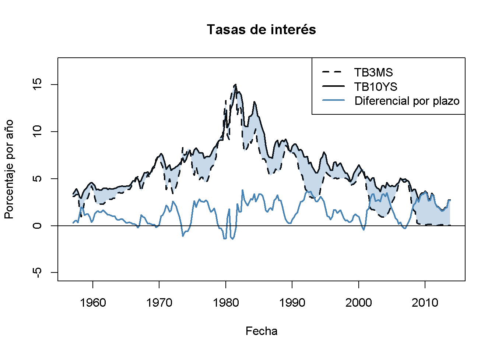

17.3 Cointegración
Concepto clave
16.5
Cointegration
Cuando \(X_t\) y \(Y_t\) son \(I(1)\) y si existe un \(\theta\) tal que \(Y_t - \theta X_t\) es \(I(0)\), \(X_t\) y \(Y_t\) están cointegrados. Dicho de otra manera, la cointegración de \(X_t\) y \(Y_t\) significa que \(X_t\) y \(Y_t\) tienen la misma tendencia estocástica o una común y que esta tendencia puede eliminarse tomando una diferencia específica de la serie de modo que la serie resultante sea estacionario.
Las funciones R para el análisis de cointegración se implementan en el paquete urca.
Como ejemplo, se reconsidera la relación entre las tasas de interés a corto y largo plazo con el ejemplo de las letras del Tesoro de EE. UU. a 3 meses, los bonos del Tesoro de EE. UU. a 10 años y el diferencial en sus tasas de interés que se han introducido en el Capítulo 15.4. El siguiente fragmento de código muestra cómo crear el gráfico.
# graficar ambas series de interés
plot(merge(as.zoo(TB3MS), as.zoo(TB10YS)),
plot.type = "single",
lty = c(2, 1),
lwd = 2,
xlab = "Fecha",
ylab = "Porcentaje por año",
ylim = c(-5, 17),
main = "Tasas de interés")
# agregar la serie de diferencial por plazo
lines(as.zoo(TSpread),
col = "steelblue",
lwd = 2,
xlab = "Fecha",
ylab = "Porcentaje por año",
main = "Diferencial por plazo")
# sombrear el diferencial por plazo
polygon(c(time(TB3MS), rev(time(TB3MS))),
c(TB10YS, rev(TB3MS)),
col = alpha("steelblue", alpha = 0.3),
border = NA)
# agregar línea horizontal agregar 0
abline(0, 0)
# agregar una leyenda
legend("topright",
legend = c("TB3MS", "TB10YS", "Diferencial por plazo"),
col = c("black", "black", "steelblue"),
lwd = c(2, 2, 2),
lty = c(2, 1, 1))
El gráfico sugiere que las tasas de interés a largo y a corto plazo están cointegradas: Ambas series de intereses parecen tener el mismo comportamiento a largo plazo. Comparten una tendencia estocástica común. El diferencial de plazo, que se obtiene tomando la diferencia entre las tasas de interés de largo y corto plazo, parece estacionario. De hecho, la teoría de expectativas de la estructura de términos sugiere que el coeficiente de cointegración \(\theta\) es 1. Esto es consistente con el resultado visual.
Pruebas de cointegración
Siguiendo el Concepto clave 16.5, parece natural construir una prueba para la cointegración de dos series de la siguiente manera: Si dos series \(X_t\) y \(Y_t\) están cointegradas, la serie obtenida tomando la diferencia \(Y_t - \theta X_t\) debe ser estacionario. Si las series no están cointegradas, \(Y_t - \theta X_t\) no es estacionaria. Esta es una suposición que se puede probar mediante una prueba de raíz unitaria. Se tiene que distinguir entre dos casos:
\(\theta\) es conocido.
El conocimiento de \(\theta\) permite calcular las diferencias \(z_t = Y_t - \theta X_t\) para que las pruebas de raíz unitaria de Dickey-Fuller y DF-GLS se puedan aplicar a \(z_t\). Para estas pruebas, los valores críticos son los valores críticos de la prueba ADF o DF-GLS.
\(\theta\) es desconocido.
Si se desconoce \(\theta\), debe estimarse antes de que se pueda aplicar la prueba de raíz unitaria. Esto se hace estimando la regresión \[Y_t = \alpha + \theta X_t + z_t\] usando MCO (esto se conoce como la regresión de la primera etapa). Luego, se usa una prueba de Dickey-Fuller para probar la hipótesis de que \(z_t\) es una serie no estacionaria. Esto se conoce como prueba Engle-Granger Augmented Dickey-Fuller para cointegración (o prueba EG-ADF) después de Engle and Granger (1987). Los valores críticos para esta prueba son especiales, ya que la distribución nula asociada no es normal y depende del número de variables \(I(1)\) utilizadas como regresores en la regresión de la primera etapa. Cuando solo existen dos variables presuntamente cointegradas (y, por lo tanto, se usa una sola variable \(I(1)\) en la regresión de MCO de la primera etapa), los valores críticos para los niveles $10% $, \(5\%\) y \(1\%\) son \(-3.12\), \(-3.41\) y \(-3.96\).
Aplicación a las tasas de interés
Como se mencionó anteriormente, la teoría de la estructura temporal sugiere que las tasas de interés a largo y corto plazo están cointegradas con un coeficiente de cointegración de \(\theta = 1\). En la sección anterior se ha visto que existe evidencia visual de esta conjetura, ya que el diferencial de las tasas de interés a 10 años y a 3 meses parece estacionario.
Se continua usando pruebas formales (la ADF y la prueba DF-GLS) para ver si las series de tasas de interés individuales están integradas y si su diferencia es estacionaria (por ahora, se asume que se conoce \(\theta = 1\)). Ambos se hacen convenientemente usando las funciones ur.df() para el cálculo de la prueba ADF y ur.ers() para realizar la prueba DF-GLS. Se usan datos desde 1962:Q1 hasta 2012:Q4 y se emplean modelos que incluyen un término de deriva. Se establece el orden de retraso máximo en \(6\) y se usa \(AIC\) para seleccionar la longitud de retraso óptima.
# prueba de no estacionariedad de letras del tesoro a 3 meses usando la prueba ADF
ur.df(window(TB3MS, c(1962, 1), c(2012, 4)),
lags = 6,
selectlags = "AIC",
type = "drift")
#>
#> ###############################################################
#> # Augmented Dickey-Fuller Test Unit Root / Cointegration Test #
#> ###############################################################
#>
#> The value of the test statistic is: -2.1004 2.2385
# prueba de no estacionariedad de bonos del tesoro a 10 años usando la prueba ADF
ur.df(window(TB10YS, c(1962, 1), c(2012, 4)),
lags = 6,
selectlags = "AIC",
type = "drift")
#>
#> ###############################################################
#> # Augmented Dickey-Fuller Test Unit Root / Cointegration Test #
#> ###############################################################
#>
#> The value of the test statistic is: -1.0079 0.5501
# prueba de no estacionariedad de letras del tesoro a 3 meses usando la prueba DF-GLS
ur.ers(window(TB3MS, c(1962, 1), c(2012, 4)),
model = "constant",
lag.max = 6)
#>
#> ###############################################################
#> # Elliot, Rothenberg and Stock Unit Root / Cointegration Test #
#> ###############################################################
#>
#> The value of the test statistic is: -1.8042
# prueba de no estacionariedad de bonos del tesoro a 10 años utilizando la prueba DF-GLS
ur.ers(window(TB10YS, c(1962, 1), c(2012, 4)),
model = "constant",
lag.max = 6)
#>
#> ###############################################################
#> # Elliot, Rothenberg and Stock Unit Root / Cointegration Test #
#> ###############################################################
#>
#> The value of the test statistic is: -0.942El valor crítico correspondiente de \(10\%\) para ambas pruebas es \(-2.57\), por lo que no se puede rechazar las hipótesis nulas de no estacionario para ninguna de las series, incluso en el nivel de significancia de \(10\%\).1 Se concluye que es plausible modelar ambas series de tasas de interés como \(I(1)\).
A continuación, se aplica la prueba ADF y DF-GLS para probar la no estacionariedad de la serie de márgenes de plazo, lo que significa que se prueba la no cointegración de las tasas de interés a corto y largo plazo.
# probar si el diferencial de plazo es estacionario (cointegración de tasas de interés) usando ADF
ur.df(window(TB10YS, c(1962, 1), c(2012, 4)) - window(TB3MS, c(1962, 1), c(2012 ,4)),
lags = 6,
selectlags = "AIC",
type = "drift")
#>
#> ###############################################################
#> # Augmented Dickey-Fuller Test Unit Root / Cointegration Test #
#> ###############################################################
#>
#> The value of the test statistic is: -3.9308 7.7362
# probar si el diferencial de plazo es estacionario (cointegración de las tasas de interés) utilizando la prueba DF-GLS
ur.ers(window(TB10YS, c(1962, 1), c(2012, 4)) - window(TB3MS, c(1962, 1), c(2012, 4)),
model = "constant",
lag.max = 6)
#>
#> ###############################################################
#> # Elliot, Rothenberg and Stock Unit Root / Cointegration Test #
#> ###############################################################
#>
#> The value of the test statistic is: -3.8576La Tabla 17.1 resume los resultados.
| Series | Estadístic0 de prueba ADF | Estadístico de prueba DF-GLS |
|---|---|---|
| TB3MS | \(-2.10\) | \(-1.80\) |
| TB10YS | \(-1.01\) | \(-0.94\) |
| TB10YS - TB3MS | \(-3.93\) | \(-3.86\) |
Ambas pruebas rechazan la hipótesis de no estacionariedad de la serie de diferenciales por plazo en el nivel de significancia de \(1\%\), lo que constituye una fuerte evidencia a favor de la hipótesis de que el diferencial de plazos es estacionario, lo que implica la cointegración de las tasas de interés de largo y corto plazo.
Dado que la teoría sugiere que \(\theta=1\), no existe necesidad de estimar \(\theta\), por lo que no es necesario utilizar la prueba EG-ADF que permite que \(\theta\) sea desconocido. Sin embargo, dado que es instructivo hacerlo, se calcula este estadístico de prueba. La regresión MCO de la primera etapa es \[TB10YS_t = \beta_0 + \beta_1 TB3MS_t + z_t.\]
# estimar la regresión de la primera etapa de la prueba EG-ADF
FS_EGADF <- dynlm(window(TB10YS, c(1962, 1), c(2012, 4)) ~ window(TB3MS, c(1962, 1), c(2012, 4)))
FS_EGADF
#>
#> Time series regression with "ts" data:
#> Start = 1962(1), End = 2012(4)
#>
#> Call:
#> dynlm(formula = window(TB10YS, c(1962, 1), c(2012, 4)) ~ window(TB3MS,
#> c(1962, 1), c(2012, 4)))
#>
#> Coefficients:
#> (Intercept) window(TB3MS, c(1962, 1), c(2012, 4))
#> 2.4642 0.8147Así se tiene que:
\[\begin{align*} \widehat{TB10YS}_t = 2.46 + 0.81 \cdot TB3MS_t, \end{align*}\]
donde \(\widehat{\theta} = 0.81\). A continuación, se toma la serie residual \(\{\widehat{z_t}\}\) y se calcula el estadístico de prueba ADF.
# calcular los residuos
z_hat <- resid(FS_EGADF)
# calcular el estadístico de prueba ADF
ur.df(z_hat, lags = 6, type = "none", selectlags = "AIC")
#>
#> ###############################################################
#> # Augmented Dickey-Fuller Test Unit Root / Cointegration Test #
#> ###############################################################
#>
#> The value of the test statistic is: -3.1935El estadístico de prueba es \(-3.19\), que es menor que el valor crítico de \(10\%\), pero mayor que el valor crítico de \(5\%\). Por lo tanto, la hipótesis nula de no cointegración puede rechazarse en el nivel de \(10\%\), pero no en el nivel de \(5\%\). Esto indica una potencia más baja de la prueba EG-ADF debido a la estimación de \(\theta\): Cuando \(\theta = 1\) es el valor correcto, se espera la potencia de la prueba ADF para una raíz unitaria en la serie de residuos = TB10YS - TB3MS$ mayor que cuando se usa una estimación de \(\widehat{\theta}\).
Un modelo de corrección de errores vectoriales para \(TB10YS_t\) y \(TB3MS\)
Si dos \(I(1)\) series de tiempo \(X_t\) y \(Y_t\) están cointegradas, sus diferencias son estacionarias y se pueden modelar en un VAR que se aumenta con el regresor \(Y_{t-1} - \theta X_{t-1}\). Esto se denomina modelo de corrección de errores vectoriales (VECM) y \(Y_{t} - \theta X_{t}\) se denomina término de corrección de errores. Los valores rezagados del término de corrección de errores son útiles para predecir \(\Delta X_t\) y/o \(\Delta Y_t\).
Se puede utilizar un VECM para modelar las dos tasas de interés consideradas en las secciones anteriores. Se especifica el VECM para incluir dos rezagos de ambas series como regresores y elegir \(\theta = 1\), como sugiere la teoría (ver arriba).
TB10YS <- window(TB10YS, c(1962, 1), c(2012 ,4))
TB3MS <- window(TB3MS, c(1962, 1), c(2012, 4))
# configurar el término de corrección de errores
VECM_ECT <- TB10YS - TB3MS
# estimar ambas ecuaciones del VECM usando 'dynlm()'
VECM_EQ1 <- dynlm(d(TB10YS) ~ L(d(TB3MS), 1:2) + L(d(TB10YS), 1:2) + L(VECM_ECT))
VECM_EQ2 <- dynlm(d(TB3MS) ~ L(d(TB3MS), 1:2) + L(d(TB10YS), 1:2) + L(VECM_ECT))
# cambiar el nombre de los regresores para una mejor legibilidad
names(VECM_EQ1$coefficients) <- c("Intercept", "D_TB3MS_l1", "D_TB3MS_l2",
"D_TB10YS_l1", "D_TB10YS_l2", "ect_l1")
names(VECM_EQ2$coefficients) <- names(VECM_EQ1$coefficients)
# resúmenes de coeficientes utilizando errores estándar de HAC
coeftest(VECM_EQ1, vcov. = NeweyWest(VECM_EQ1, prewhite = F, adjust = T))
#>
#> t test of coefficients:
#>
#> Estimate Std. Error t value Pr(>|t|)
#> Intercept 0.1227089 0.0551419 2.2253 0.027205 *
#> D_TB3MS_l1 -0.0016601 0.0727060 -0.0228 0.981807
#> D_TB3MS_l2 -0.0680845 0.0435059 -1.5649 0.119216
#> D_TB10YS_l1 0.2264878 0.0957071 2.3665 0.018939 *
#> D_TB10YS_l2 -0.0734486 0.0703476 -1.0441 0.297740
#> ect_l1 -0.0878871 0.0285644 -3.0768 0.002393 **
#> ---
#> Signif. codes: 0 '***' 0.001 '**' 0.01 '*' 0.05 '.' 0.1 ' ' 1
coeftest(VECM_EQ2, vcov. = NeweyWest(VECM_EQ2, prewhite = F, adjust = T))
#>
#> t test of coefficients:
#>
#> Estimate Std. Error t value Pr(>|t|)
#> Intercept -0.060746 0.107937 -0.5628 0.57422
#> D_TB3MS_l1 0.240003 0.111611 2.1504 0.03276 *
#> D_TB3MS_l2 -0.155883 0.153845 -1.0132 0.31220
#> D_TB10YS_l1 0.113740 0.125571 0.9058 0.36617
#> D_TB10YS_l2 -0.147519 0.112630 -1.3098 0.19182
#> ect_l1 0.031506 0.050519 0.6236 0.53359
#> ---
#> Signif. codes: 0 '***' 0.001 '**' 0.01 '*' 0.05 '.' 0.1 ' ' 1Por tanto, las dos ecuaciones estimadas del VECM son
\[\begin{align*} \widehat{\Delta TB3MS}_t =& \, -\underset{(0.11)}{0.06} + \underset{(0.11)}{0.24} \Delta TB3MS_{t-1} -\underset{(0.15)}{0.16} \Delta TB3MS_{t-2} \\ &+ \underset{(0.13)}{0.11} \Delta TB10YS_{t-1} -\underset{(0.11)}{0.15} \Delta TB10YS_{t-2} + \underset{(0.05)}{0.03} ECT_{t-1} \\ \widehat{\Delta TB10YS}_t =& \, \underset{(0.06)}{0.12} -\underset{(0.07)}{0.00} \Delta TB3MS_{t-1} -\underset{(0.04)}{0.07} \Delta TB3MS_{t-2} \\ &+ \underset{(0.10)}{0.23} \Delta TB10YS_{t-1} -\underset{(0.07)}{0.07} \Delta TB10YS_{t-2} -\underset{(0.03)}{0.09} ECT_{t-1}. \end{align*}\]
El resultado producido por coeftest() muestra que existe poca evidencia de que los valores rezagados de la serie de intereses diferenciados sean útiles para la predicción. Este hallazgo es más pronunciado para la ecuación de la serie diferenciada de la tasa de la letra del tesoro a 3 meses, donde el término de corrección de errores (el diferencial de plazo rezagado) no es significativamente diferente de cero en ningún nivel común de significancia. Sin embargo, para la tasa diferenciada de los bonos del tesoro a 10 años, el término de corrección de errores es estadísticamente significativo a \(1\%\) con una estimación de \(-0.09\). Esto se puede interpretar de la siguiente manera: Aunque ambas tasas de interés no son estacionarias, su relación de conintegración permite predecir el cambio en la tasa de los bonos del tesoro a 10 años utilizando el VECM. En particular, la estimación negativa del coeficiente del término de corrección de errores indica que habrá un cambio negativo en la tasa de los bonos del tesoro a 10 años del próximo período cuando la tasa de los bonos del tesoro a 10 años sea inusualmente alta en relación con la tasa del tesoro a 3 meses en el período actual.
Referencias bibliográficas
Nota: ur.df() informa dos estadísticas de prueba cuando existe una desviación en la regresión ADF. El primero de los cuales (el que interesa aquí) es el estadístico \(t\) para la prueba de que el coeficiente en el primer rezago de la serie es 0. El segundo es el estadístico \(t\) para la prueba de hipótesis que el término de deriva es igual a \(0\).↩︎